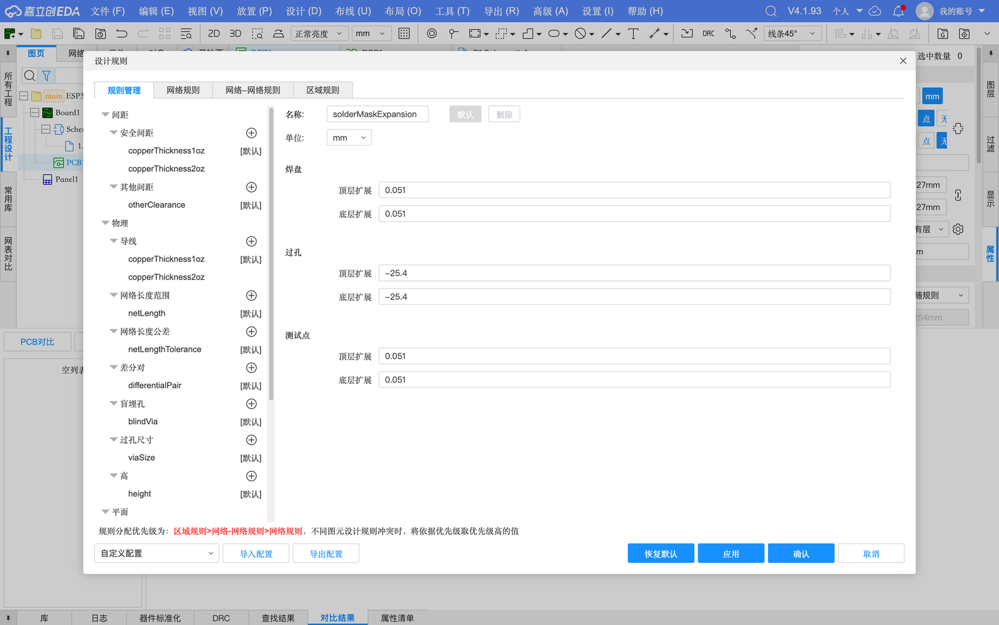
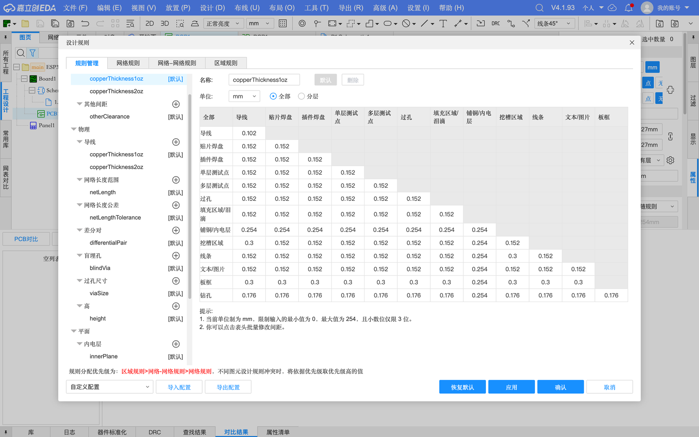
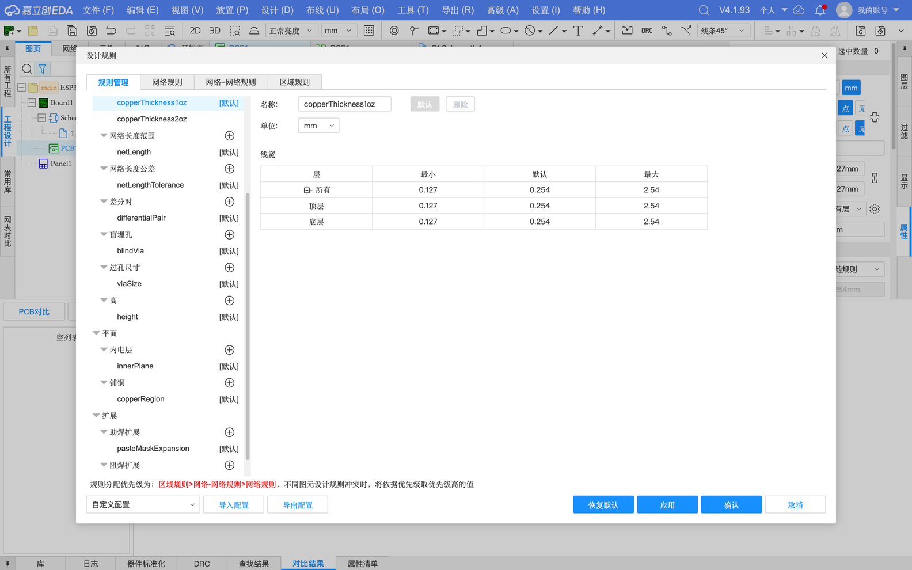
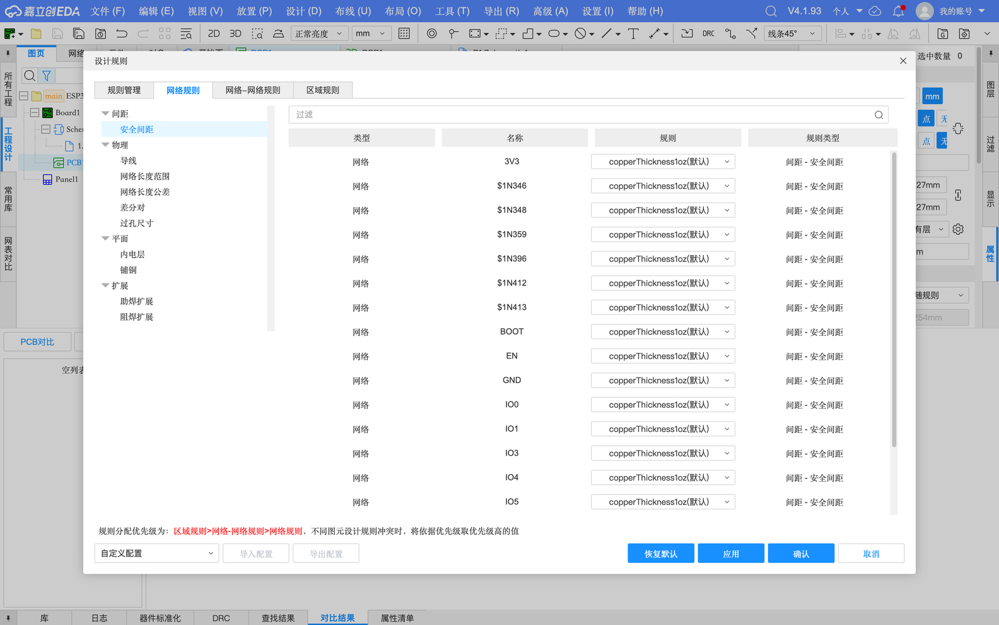
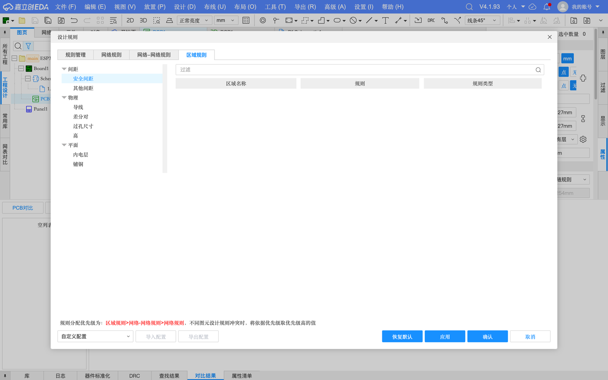
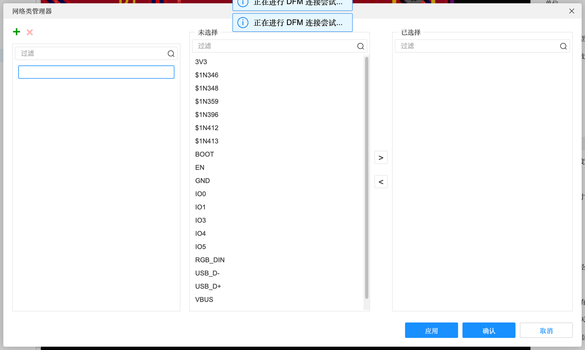
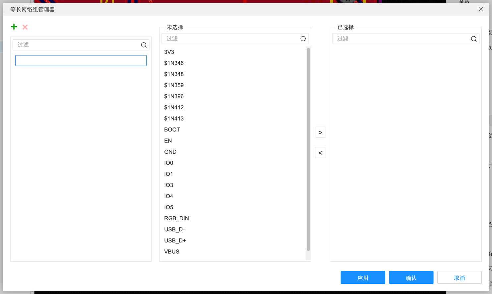
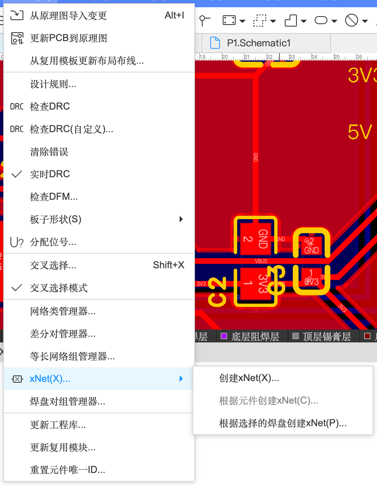
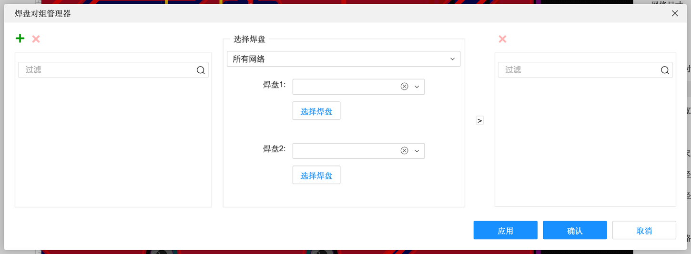

7.1 设计规则与网络管理
板子一复杂，靠“默认规则 + 手动注意”就不够了：电源线要粗、USB 线要成对、某些线要一样长、某块区域要更细。这一页讲设计规则的完整体系和网络管理工具——让软件替你盯住这些要求。
先建立一个概念：规则 = 给软件的“检查清单”#
你在 Quickstart 里见过设计规则（A-6）：最小线宽 0.127 mm、安全间距 0.152 mm……这些数字就是给软件的检查清单。布线时软件按它约束你，DRC 时按它挑错。默认规则（「嘉立创工艺(双面板)(默认)」）是按嘉立创的生产能力定的，普通板子不用改。需要改的情况是：
- 某些线要特殊对待（电源线更粗、高压线间距更大）→ 网络规则
- 两个特定网络之间要离远一点（比如 220V 和 5V）→ 网络-网络规则
- 某块区域要特殊（芯片引脚很密的地方允许更细的线）→ 区域规则
设计规则体系#
「设计」→「设计规则…」。左边的规则树分四大类，每类下面可以有多套规则（如 copperThickness1oz、copperThickness2oz），带 [默认] 的是当前默认用的那套：

规则一览（V4.1.93 实测默认值，单位 mm）
| 规则 | 管什么 | 默认值 |
|---|---|---|
| 间距 → 安全间距 copperThickness1oz | 不同网络的铜之间最少隔多远。表格里是“导线、贴片焊盘、插件焊盘、过孔、铺铜、板框……”两两之间的间距 | 大多 0.152；（另有一套 copperThickness2oz 给 2 盎司厚铜用） |
| 间距 → 其他间距 otherClearance | 元件到元件、插件焊点到 SMD 元件、钻孔到钻孔 | 0 / 0 / 0.3 |
| 物理 → 导线 | 线宽最小 / 默认 / 最大，可分层设置 | 0.127 / 0.254 / 2.54 |
| 物理 → 网络长度范围 netLength | 某网络的总长度必须在什么范围内（可按长度或延迟） | 0 / 0（不限制） |
| 物理 → 网络长度公差 netLengthTolerance | 等长组里各线长度允许差多少 | ±25.4 |
| 物理 → 差分对 differentialPair | 差分线的线宽、两线间距、长度误差 | 线宽 0.127/0.254/2.54，间距 0.152，长度误差 0.254（案例 B 改成了 5） |
| 物理 → 盲埋孔 blindVia | 盲孔/埋孔的起始层、结束层、尺寸（多层板才用） | 空 |
| 物理 → 过孔尺寸 viaSize | 过孔外径 / 内径的最小、默认、最大 | 外径 0.5/0.61/10，内径 0.3/0.305/6.3 |
| 物理 → 高 height | 元件最大高度（防止撞外壳） | 0（不限制） |
| 平面 → 内电层 innerPlane | 多层焊盘接内电层的方式：发散 / 直连，发散线宽、间距、角度 | 发散，0.254，90° |
| 平面 → 铺铜 copperRegion | 单层焊盘、多层焊盘、导线接铺铜的方式 | 焊盘发散 0.254 / 90°，导线直连 |
| 扩展 → 助焊扩展 pasteMaskExpansion | 钢网开口比焊盘大/小多少 | 焊盘 0，测试点 −25.4（不开钢网） |
| 扩展 → 阻焊扩展 solderMaskExpansion | 阻焊开窗比焊盘大多少 | 焊盘 0.051，过孔 −25.4（盖油），测试点 0.051 |


三种规则的优先级#
对话框底部写着：“规则分配优先级为：区域规则 > 网络-网络规则 > 网络规则，不同图元设计规则冲突时，将依据优先级取优先级高的值”。也就是：越具体的规则越优先。


例子：让所有电源线自动变粗#
- 「设计规则」→ 物理 → 导线，右键新建一套规则，起名“power”，默认线宽 0.5 mm
- 「设计」→「网络类管理器…」新建网络类“电源”，把 VBUS、3V3、GND 加进去（见下）
- 回到设计规则 →「网络规则」标签，把“电源”这个网络类的导线规则改成 power
- 以后画这些网络的线，起始线宽自动就是 0.5 mm；DRC 会检查有没有画细了
约束区域#
「放置」→「约束区域」画一个框，然后在「区域规则」里给它指定规则。典型用途：BGA、QFN 芯片下面引脚很密，那一小块允许更细的线和更小的间距，其他地方保持宽松。
导入导出配置#
底部的「导入配置 / 导出配置」可以把整套规则存成文件，换工厂或者团队统一规则时用；「恢复默认」一键回到嘉立创默认工艺。
网络管理#
| 管理器 | 位置 | 作用 |
|---|---|---|
| 网络类管理器 | 设计菜单 | 把一批网络编成组（如“电源”“USB”），规则按组设置 |
| 差分对管理器 | 设计菜单 | 指定哪两根线是一对差分信号（B-3 实测，含“自动生成”要点「应用」的坑） |
| 等长网络组管理器 | 设计菜单 | 指定一组要求长度相等的网络（如 DDR 数据线） |
| xNet | 设计 → xNet → 创建 xNet / 根据元件创建 / 根据选择的焊盘创建 | 一根信号中间串了电阻时，把“电阻两边”当成同一条信号来算长度 |
| 焊盘对组管理器 | 设计菜单 | 指定两个焊盘之间这一段（而不是整条网络）的长度约束 |
| 引脚延迟管理器 | 工具菜单 | 芯片内部引线也有长度，在这里填进去，等长计算更准 |



